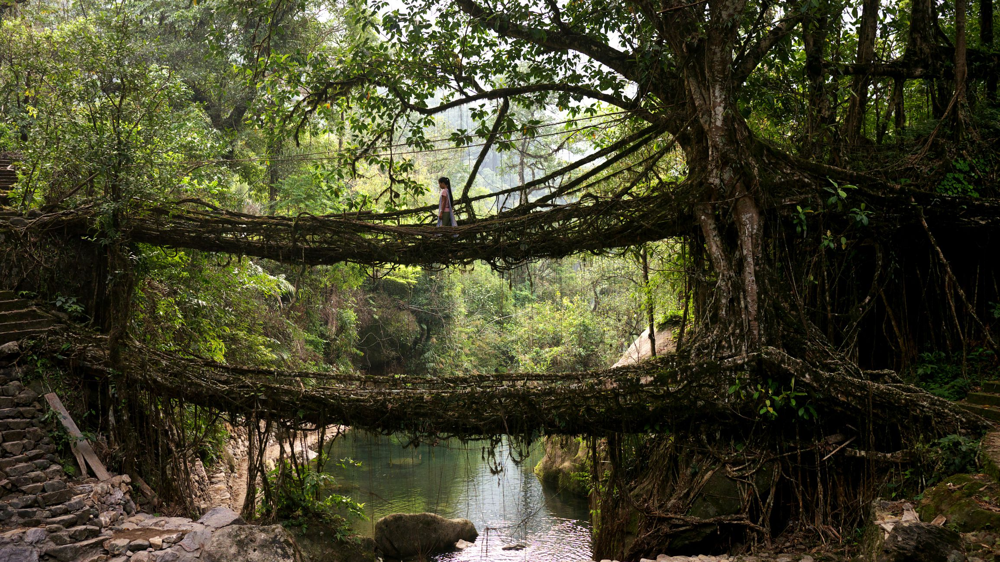
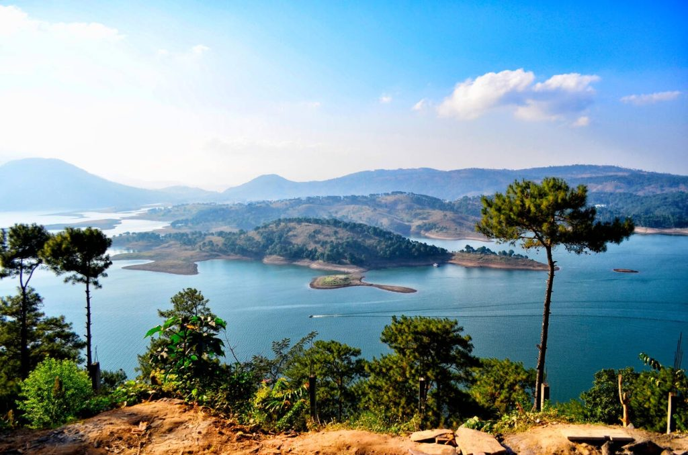

Living Root Bridges
Meghalaya is famous for its natural living root bridges, especially in Cherrapunji and Mawlynnong. These unique structures are made by training the roots of rubber trees over decades.
They attract eco-tourists and nature lovers for their engineering marvel and scenic beauty.

Nohkalikai Falls
Nohkalikai Falls near Cherrapunji is the tallest plunge waterfall in India. It is surrounded by lush green cliffs and is a major tourist attraction in Meghalaya.
The waterfall is named after a local legend, adding cultural significance to its natural beauty.

Shillong
Shillong, the capital city of Meghalaya, is known as the "Scotland of the East" for its rolling hills, pleasant climate, and scenic landscapes.
The city is a cultural hub with music festivals, local markets, and colonial-era architecture.

Wangala Festival
Wangala is a harvest festival celebrated by the Garo tribe of Meghalaya. It involves traditional dances, drumming, and prayers to the Sun God.
The festival reflects Meghalaya's rich tribal heritage and vibrant community traditions.
Culture & Traditions
Meghalaya is home to Khasi, Garo, and Jaintia tribes with distinct traditions, dances, music, and festivals. Its cuisine, handicrafts, and eco-tourism attractions reflect harmony with nature and tribal culture.
The state is also known for its lush landscapes, waterfalls, caves, and biodiversity.